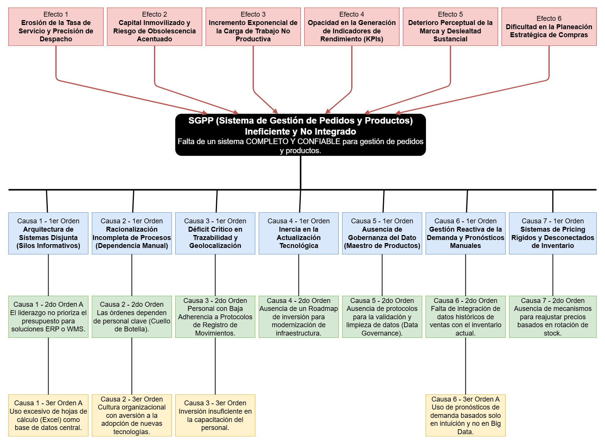

Sistema Integral para Melimel • Análisis Completo • Proyecto Académico
El Sistema de Gestión de Pedidos y Productos (SGPP) constituye una solución integral orientada a optimizar los procesos de administración comercial dentro de una organización. Su propósito principal es mejorar la eficiencia en el registro y control de pedidos, la gestión de inventarios de productos, así como la verificación del estado de entrega y facturación. Este sistema busca reducir errores manuales, agilizar la trazabilidad de las operaciones y proporcionar información confiable para la toma de decisiones estratégicas.
El SGPP se desarrolla bajo el paradigma del análisis estructurado (modelo esencial), lo que permite representar de manera clara y detallada los requerimientos funcionales sin entrar en aspectos técnicos de implementación. Este enfoque, inspirado en las propuestas de Yourdon, asegura una solución modular y flexible, capaz de adaptarse a distintos escenarios empresariales. La interfaz del sistema se diseña para ser amigable y sencilla, sin perder de vista la complejidad subyacente de sus funcionalidades, garantizando que tanto usuarios administrativos como operativos puedan interactuar con facilidad.
En el marco de este documento se presentan los fundamentos teóricos que justifican el diseño y funcionamiento del SGPP, así como los beneficios y retos que implica su implementación en entornos comerciales modernos. Se busca demostrar cómo la integración de procesos de pedidos e inventarios en un solo sistema contribuye a la eficiencia organizacional, la reducción de costos y la mejora en la satisfacción del cliente.
Control eficiente del registro y seguimiento de órdenes comerciales
Administración en tiempo real del stock y productos disponibles
Verificación y seguimiento del proceso de distribución
El Sistema de Gestión de Pedidos y Productos (SGPP) surge como respuesta a la necesidad de las organizaciones de contar con herramientas que permitan administrar de manera eficiente los procesos comerciales relacionados con la recepción de pedidos, el control de inventarios y la distribución de productos. Tradicionalmente, estas actividades se realizaban de forma manual o mediante sistemas aislados, lo que generaba duplicidad de información, errores en el registro y dificultades en la trazabilidad de las operaciones.
La evolución de los sistemas de información ha permitido que la gestión de pedidos e inventarios se integre en plataformas centralizadas, capaces de ofrecer una visión completa y en tiempo real del estado de los productos y las solicitudes de los clientes. El SGPP se fundamenta en el paradigma del análisis estructurado (modelo esencial), el cual facilita la identificación clara de los requerimientos funcionales sin necesidad de entrar en detalles técnicos de implementación. Este enfoque, propuesto por Yourdon, asegura un desarrollo modular y flexible, adaptado a las necesidades específicas de cada organización.
La implementación de sistemas de gestión de pedidos y productos ha demostrado beneficios significativos en distintos sectores: reducción de tiempos de procesamiento, disminución de errores humanos, optimización de inventarios y mejora en la satisfacción del cliente. Sin embargo, también plantea retos importantes, como la necesidad de capacitación de los usuarios, la integración con sistemas existentes y la adaptación a procesos internos previamente establecidos. En este documento se analizan los fundamentos teóricos que justifican el diseño y funcionamiento del SGPP, así como los beneficios y desafíos que implica su aplicación en entornos empresariales modernos.
Eficiencia, precisión y satisfacción del cliente
Capacitación, integración y adaptación
Análisis estructurado de Yourdon
La ausencia de un sistema unificado para la gestión de pedidos y productos en las organizaciones comerciales genera múltiples desafíos. Actualmente, las tareas relacionadas con el registro de pedidos, la actualización de inventarios, la verificación de disponibilidad de productos y el control de facturación suelen realizarse de manera manual o mediante sistemas independientes. Esta fragmentación provoca ineficiencias, errores frecuentes y demoras en la atención al cliente.
Por ejemplo, el proceso de recepción y validación de pedidos requiere que el personal administrativo realice tareas repetitivas, como cotejar inventarios, verificar precios y registrar datos en diferentes plataformas. Estas actividades no solo consumen tiempo valioso, sino que también son altamente propensas a errores humanos, lo que puede derivar en pérdidas económicas, incumplimiento de plazos de entrega y disminución de la satisfacción del cliente.
Además, los responsables de la gestión carecen de acceso inmediato y confiable a información consolidada sobre el estado de los pedidos y el nivel de inventarios, lo que dificulta la toma de decisiones estratégicas en tiempo real. La falta de integración entre las áreas de ventas, almacén y facturación limita la capacidad de respuesta de la organización y afecta directamente su competitividad en el mercado.
Es en este contexto que surge la necesidad de implementar un Sistema de Gestión de Pedidos y Productos (SGPP), capaz de centralizar y automatizar estos procesos. Dicho sistema busca mejorar la eficiencia operativa, reducir errores, optimizar el control de inventarios y garantizar una atención más ágil y precisa a los clientes, contribuyendo así al fortalecimiento de la gestión empresarial.
Tiempo valioso perdido en tareas manuales repetitivas
Procesos manuales propensos a fallas humanas
Reducción de competitividad y satisfacción del cliente
El análisis estructurado de las causas y efectos de los problemas identificados en la gestión de pedidos y productos revela una red compleja de interrelaciones que afectan la eficiencia operacional.

Pérdida de clientes, costos elevados, baja competitividad
Ineficiencia en gestión de pedidos y productos
Procesos manuales, falta de integración, tecnología obsoleta
El problema principal que aborda el Sistema de Gestión de Pedidos y Productos (SGPP) es la falta de un sistema unificado para la administración de los procesos comerciales relacionados con pedidos, inventarios y facturación dentro de una organización. Esta carencia de integración genera ineficiencias operativas, errores en el registro de pedidos, demoras en la actualización de inventarios y un control inadecuado de la información financiera.
La gestión manual o mediante sistemas independientes provoca duplicidad de datos, pérdida de información y dificultades en la trazabilidad de las operaciones. Como consecuencia, se incrementan los costos operativos, se reducen los niveles de satisfacción del cliente y se limita la competitividad de la empresa en el mercado.
El SGPP busca resolver estos problemas ofreciendo una solución tecnológica que centralice y automatice la gestión de pedidos, productos e información financiera en una plataforma accesible y eficiente. De este modo, se pretende optimizar los recursos de la organización, mejorar la comunicación entre las áreas de ventas, almacén y administración, y reducir los errores humanos en los procesos clave de gestión. Asimismo, el sistema permitirá contar con información confiable y en tiempo real, lo que facilitará la toma de decisiones estratégicas y contribuirá al fortalecimiento de la eficiencia empresarial.
Flujo de Impacto: Falta de Integración → Pedidos Desorganizados → Inventario Desactualizado → Facturación Errónea → Cliente Insatisfecho
Flujo de Mejora: Sistema Unificado → Procesos Centralizados → Información Confiable → Mejora Competitiva
Carencia de sistema unificado para procesos comerciales
Ineficiencia, errores y pérdida de competitividad
Plataforma tecnológica centralizada y eficiente
Diseñar e implementar un Sistema de Gestión de Pedidos y Productos (SGPP) que centralice y automatice los procesos de registro de pedidos, control de inventarios y facturación, con el fin de mejorar la eficiencia operativa, reducir errores humanos y proporcionar información confiable para la toma de decisiones estratégicas dentro de la organización.
Automatización y optimización de procesos
Reducción de errores humanos
Mejora en satisfacción del cliente
El propósito de este estudio es desarrollar una comprensión integral de los procesos de gestión de pedidos y productos en organizaciones comerciales, con el fin de diseñar una solución tecnológica que aborde las deficiencias identificadas en los sistemas actuales.
Análisis profundo de procesos comerciales
Desarrollo de soluciones tecnológicas
Comprobación de efectividad
La metodología utilizada en el desarrollo del Sistema de Gestión de Pedidos y Productos (SGPP) se fundamenta en el análisis estructurado y en el modelo esencial. Este enfoque permite descomponer el sistema en componentes lógicos y bien definidos, priorizando la comprensión de los procesos comerciales antes de abordar la implementación técnica.
En la metodología propuesta para el SGPP se adopta el enfoque del análisis estructurado, cuyo modelo esencial, formulado por Edward Yourdon, se considera un estándar para el diseño y desarrollo de sistemas de información. Este enfoque pone énfasis en la descomposición jerárquica de los procesos del sistema, lo que permite obtener una visión clara y comprensible de los requisitos sin caer en detalles técnicos prematuros.
Al seguir los principios de Yourdon, se busca garantizar que el SGPP esté diseñado de manera eficiente y lógica, alineándose con las necesidades de los usuarios y asegurando la máxima funcionalidad, independientemente de las restricciones tecnológicas.
Este enfoque asegura que el SGPP cumpla con los requerimientos del usuario, mantenga coherencia en sus procesos y ofrezca una solución modular y flexible, capaz de adaptarse a distintos escenarios empresariales.
Enfoque de Edward Yourdon para análisis estructurado
Diagramas de Flujo de Datos para modelado
Revisión continua con usuarios finales
La planificación de actividades para el desarrollo del Sistema de Gestión de Pedidos y Productos (SGPP) se organiza en etapas secuenciales que garantizan un proceso ordenado y trazable. Cada fase se orienta a cumplir objetivos específicos, asegurando que el sistema responda a las necesidades de la organización y se mantenga alineado con los principios del análisis estructurado.
Timeline: Análisis → Diseño → Implementación → Pruebas → Validación
Ventas, Almacén y Administración trabajando colaborativamente
Cada fase alimenta y mejora la siguiente etapa
Revisión y ajuste constante con usuarios finales